ggNetView: An R Package for Reproducible Biological Network Analysis and Visualization. It provides flexible and publication-ready tools for exploring complex biological and ecological networks.
Installation
ggNetView depends on a number of CRAN packages. We recommend installing the required dependencies first, and then installing ggNetView from GitHub.
Current development release: v0.2.1
Step1: install CRAN dependencies
cran_pkgs <- c(
"boot", "dplyr", "FNN", "future", "future.apply",
"ggforce", "ggnewscale", "ggplot2", "ggraph", "ggrepel",
"Hmisc", "huge", "igraph", "magrittr", "MASS",
"Matrix", "patchwork", "progressr", "psych", "purrr",
"qgraph", "Rcpp", "RcppArmadillo", "readr", "rlang",
"scales", "scatterpie", "stringr", "tibble", "tidygraph",
"tidyr", "vegan", "VGAM", "WGCNA"
)
new_pkgs <- cran_pkgs[!cran_pkgs %in% installed.packages()[, "Package"]]
if (length(new_pkgs)) install.packages(new_pkgs)Example1: Co-expression Network
Step1: load ggNetView
library(ggplot2)
library(ggnewscale)
library(ggNetView)
#>
#> ░██ ░██
#> ░██
#> ░████████ ░████████ ░████████ ░███████ ░████████ ░██ ░██ ░██ ░███████ ░██ ░██ ░██
#> ░██ ░██ ░██ ░██ ░██ ░██ ░██ ░██ ░██ ░██ ░██ ░██░██ ░██ ░██ ░██ ░██
#> ░██ ░██ ░██ ░██ ░██ ░██ ░█████████ ░██ ░██ ░██ ░██░█████████ ░██ ░████ ░██
#> ░██ ░███ ░██ ░███ ░██ ░██ ░██ ░██ ░██░██ ░██░██ ░██░██ ░██░██
#> ░█████░██ ░█████░██ ░██ ░██ ░███████ ░████ ░███ ░██ ░███████ ░███ ░███
#> ░██ ░██
#> ░███████ ░███████
#>
#>
#> ggNetView: Reproducible and Deterministic Network Analysis and Visualization
#> Version: 0.2.1
#>
#> Authors: Yue Liu, Chao Wang
#> Maintainer: Yue Liu <yueliu@iae.ac.cn>
#>
#> Manual: https://jiawang1209.github.io/ggNetView-manual/
#> GitHub: https://github.com/Jiawang1209/ggNetView
#> Bug Reports: https://github.com/Jiawang1209/ggNetView/issues
#>
#> Type citation('ggNetView') for how to cite this package.Step2: load Data
You can load raw matrix
data("otu_tab") # raw OTU/feature count matrix (features x samples)
otu_tab[1:5, 1:5] # peek at the first 5 rows/cols
#> KO1 KO2 KO3 KO4 KO5
#> ASV_1 1113 1968 816 1372 1062
#> ASV_2 1922 1227 2355 2218 2885
#> ASV_3 568 460 899 902 1226
#> ASV_4 1433 400 535 759 1287
#> ASV_6 882 673 819 888 1475You can load rarely matrix. Note : the rownames of
otu_rareis the features.
data("otu_rare") # rarefied count matrix; rownames = features
otu_tab[1:5, 1:5] # peek at the first 5 rows/cols
#> KO1 KO2 KO3 KO4 KO5
#> ASV_1 1113 1968 816 1372 1062
#> ASV_2 1922 1227 2355 2218 2885
#> ASV_3 568 460 899 902 1226
#> ASV_4 1433 400 535 759 1287
#> ASV_6 882 673 819 888 1475
data("otu_rare_relative") # rarefied + relative-abundance matrix (features x samples)
otu_rare_relative[1:5, 1:5] # peek at the first 5 rows/cols
#> KO1 KO2 KO3 KO4 KO5
#> ASV_1 0.03306667 0.05453333 0.02013333 0.03613333 0.02686667
#> ASV_2 0.05750000 0.03393333 0.06046667 0.05810000 0.07320000
#> ASV_3 0.01733333 0.01296667 0.02290000 0.02336667 0.03106667
#> ASV_4 0.04266667 0.01093333 0.01416667 0.01933333 0.03346667
#> ASV_6 0.02646667 0.01856667 0.02110000 0.02353333 0.03806667You can load node annotation. Note : the rownames of
tax_tabis NULL.
data("tax_tab") # node (taxonomy) annotation table; rownames = NULL
tax_tab[1:5, 1:5] # peek at the first 5 rows/cols
#> # A tibble: 5 × 5
#> OTUID Kingdom Phylum Class Order
#> <chr> <chr> <chr> <chr> <chr>
#> 1 ASV_2 Archaea Thaumarchaeota Unassigned Nitrososphaerales
#> 2 ASV_3 Bacteria Verrucomicrobia Spartobacteria Unassigned
#> 3 ASV_31 Bacteria Actinobacteria Actinobacteria Actinomycetales
#> 4 ASV_27 Archaea Thaumarchaeota Unassigned Nitrososphaerales
#> 5 ASV_9 Bacteria Unassigned Unassigned UnassignedStep3: create graph object
obj <- build_graph_from_mat(
mat = otu_rare_relative, # variables x samples abundance matrix
transfrom.method = "none", # pre-correlation transform; "none" = keep as-is
method = "WGCNA", # correlation backend: WGCNA::corAndPvalue
cor.method = "pearson", # Pearson correlation
proc = "BH", # multiple-testing correction (Benjamini-Hochberg)
r.threshold = 0.7, # |r| cutoff for keeping an edge
p.threshold = 0.05, # adjusted p-value cutoff
node_annotation = tax_tab # taxonomy joined onto each node by name
)
obj # tbl_graph with Modularity / Degree / Strength + taxonomy
#> # A tbl_graph: 1951 nodes and 8732 edges
#> #
#> # An undirected simple graph with 120 components
#> #
#> # Node Data: 1,951 × 14 (active)
#> name modularity modularity2 modularity3 Modularity Degree Strength Kingdom
#> <chr> <fct> <ord> <chr> <ord> <dbl> <dbl> <chr>
#> 1 ASV_916 1 1 1 1 57 49.7 Bacter…
#> 2 ASV_777 1 1 1 1 55 46.4 Bacter…
#> 3 ASV_23… 1 1 1 1 53 46.6 Bacter…
#> 4 ASV_606 1 1 1 1 51 42.7 Bacter…
#> 5 ASV_740 1 1 1 1 51 44.9 Bacter…
#> 6 ASV_15… 1 1 1 1 50 43.8 Bacter…
#> 7 ASV_568 1 1 1 1 49 43.6 Bacter…
#> 8 ASV_671 1 1 1 1 49 43.7 Bacter…
#> 9 ASV_664 1 1 1 1 49 42.9 Bacter…
#> 10 ASV_10… 1 1 1 1 49 43.6 Bacter…
#> # ℹ 1,941 more rows
#> # ℹ 6 more variables: Phylum <chr>, Class <chr>, Order <chr>, Family <chr>,
#> # Genus <chr>, Species <chr>
#> #
#> # Edge Data: 8,732 × 5
#> from to weight correlation corr_direction
#> <int> <int> <dbl> <dbl> <chr>
#> 1 1656 1703 0.793 0.793 Positive
#> 2 782 787 0.895 0.895 Positive
#> 3 395 787 0.864 0.864 Positive
#> # ℹ 8,729 more rowsStep4: ggNetView to plot
Basic network plot
p1 <- ggNetView(
graph_obj = obj, # tbl_graph from build_graph_from_mat()
layout = "gephi", # node-positioning algorithm
layout_module = "adjacent", # place neighbouring modules close together
group_by = "Modularity", # node attribute used to define groups/modules
node_fill = "Modularity", # node attribute mapped to point fill
node_size_range = c(1, 5), # min/max node size range
center = F, # do NOT pull nodes toward each module centre
node_jitter = F, # no positional jitter
shrink = 0.9, # shrink layout inward (smaller = more compact)
edge_alpha = 0.2, # edge transparency
edge_color = "#d9d9d9" # edge colour
)
p1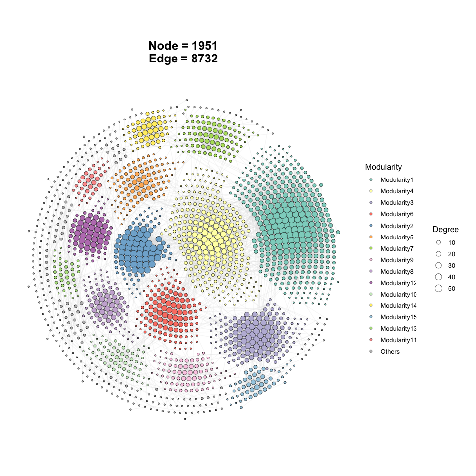
Add outer line in netwotk plot
p2 <- ggNetView(
graph_obj = obj, # tbl_graph from build_graph_from_mat()
layout = "gephi", # node-positioning algorithm
layout_module = "adjacent", # place neighbouring modules close together
group_by = "Modularity", # node attribute used to define groups/modules
node_fill = "Modularity", # node attribute mapped to point fill
node_size_range = c(1, 5), # min/max node size range
center = F, # do NOT pull nodes toward each module centre
node_jitter = TRUE, # jitter node positions to reduce overlap
node_jitter_sd = 0.15, # SD of the jitter (bigger -> more spread)
edge_color = "corr_direction", # colour edges by correlation sign
shrink = 0.9, # shrink layout inward (smaller = more compact)
edge_alpha = 0.2, # edge transparency
module_outline = T, # draw an outer hull/line around each module
module_label = T # show node labels
)
p2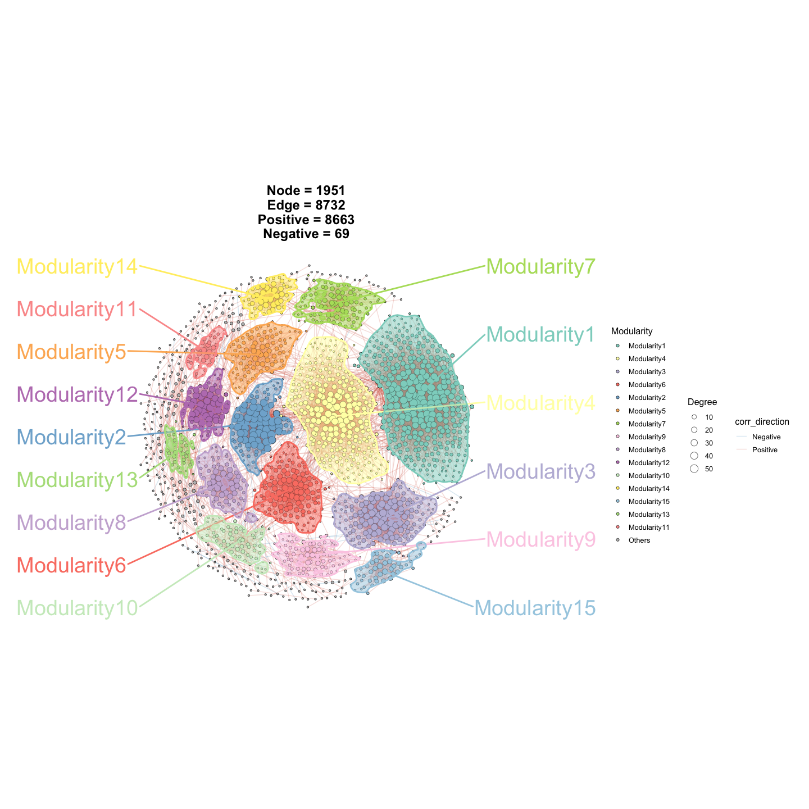
Change the fill of node points.
p3 <- ggNetView(
graph_obj = obj, # tbl_graph from build_graph_from_mat()
layout = "gephi", # node-positioning algorithm
layout_module = "adjacent", # place neighbouring modules close together
group_by = "Modularity", # group nodes by module
node_fill = "Phylum", # map point fill to taxonomy (Phylum) instead of module
node_size_range = c(1, 5), # min/max node size range
center = F, # do NOT pull nodes toward each module centre
node_jitter = TRUE, # jitter node positions to reduce overlap
node_jitter_sd = 0.15, # SD of the jitter
edge_color = "corr_direction", # colour edges by correlation sign
shrink = 0.9, # shrink layout inward
edge_alpha = 0.2, # edge transparency
module_outline = T, # draw an outer hull/line around each module
module_label = T # show node labels
)
p3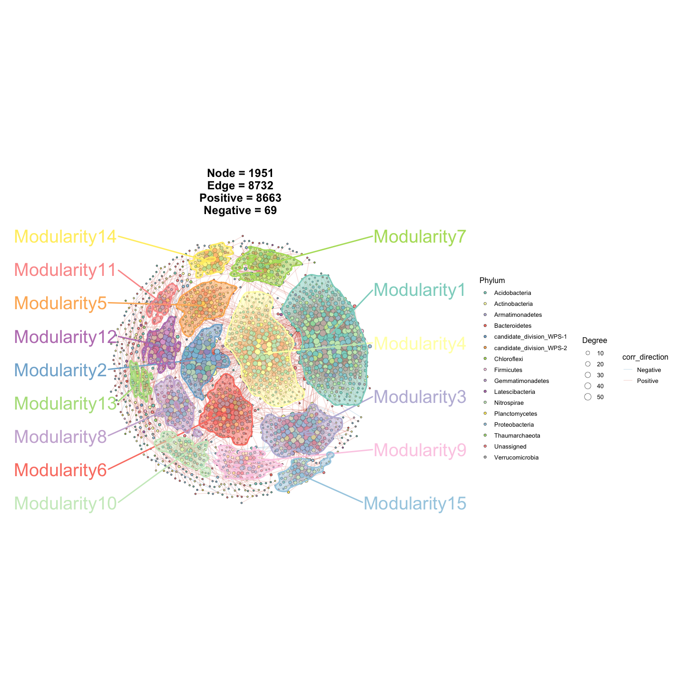
Change the color of node points.
p4 <- ggNetView(
graph_obj = obj, # tbl_graph from build_graph_from_mat()
layout = "gephi", # node-positioning algorithm
layout_module = "adjacent", # place neighbouring modules close together
group_by = "Modularity", # group nodes by module
node_fill = "Phylum", # map point fill to taxonomy (Phylum)
node_color = "Phylum", # map point border colour to taxonomy (Phylum)
node_size_range = c(1, 5), # min/max node size range
center = F, # do NOT pull nodes toward each module centre
node_jitter = TRUE, # jitter node positions to reduce overlap
node_jitter_sd = 0.15, # SD of the jitter
edge_color = "corr_direction", # colour edges by correlation sign
shrink = 0.9, # shrink layout inward
edge_alpha = 0.2, # edge transparency
module_outline = T, # draw an outer hull/line around each module
module_label = T # show node labels
)
p4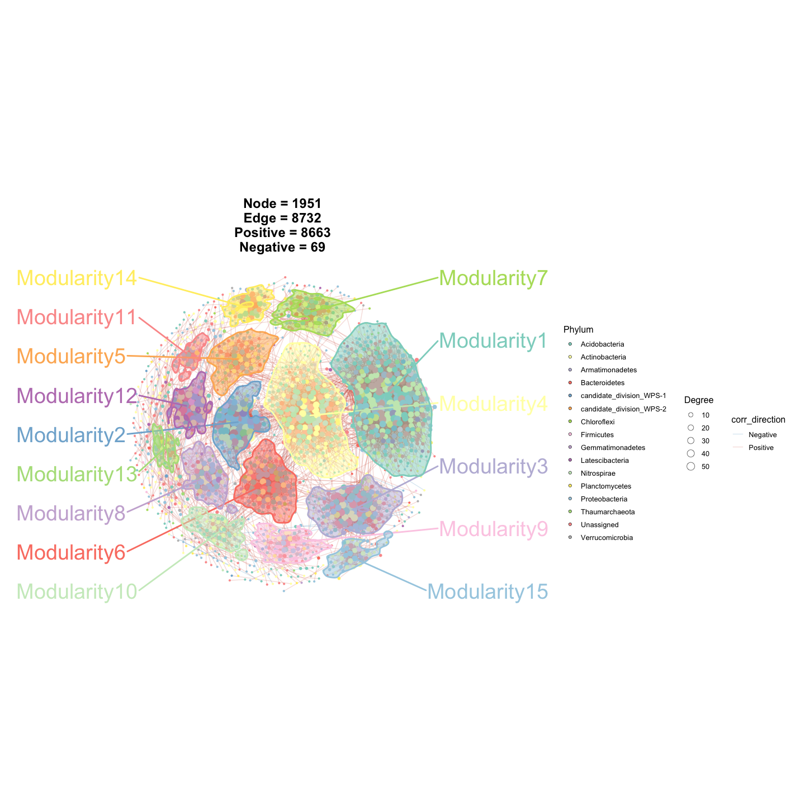
Add node label
p5 <- ggNetView(
graph_obj = obj, # tbl_graph from build_graph_from_mat()
layout = "gephi", # node-positioning algorithm
layout_module = "adjacent", # place neighbouring modules close together
group_by = "Modularity", # group nodes by module
node_fill = "Modularity", # map point fill to module
node_size_range = c(1, 5), # min/max node size range
center = F, # do NOT pull nodes toward each module centre
node_jitter = TRUE, # jitter node positions to reduce overlap
node_jitter_sd = 0.15, # SD of the jitter
edge_color = "corr_direction", # colour edges by correlation sign
shrink = 0.9, # shrink layout inward
edge_alpha = 0.2, # edge transparency
module_outline = T, # draw an outer hull/line around each module
module_label = T, # show node labels
node_label = "top1" # label only the top-1 hub node per module
)
p5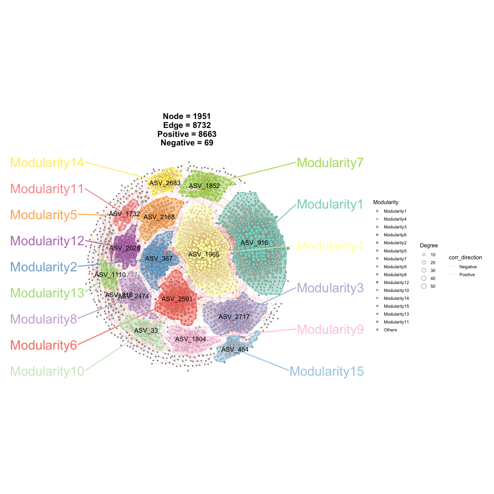
Save Plot
Example2: Subgraph
Get information of graph_object
Sub_module_1 <- get_subgraph(
graph_obj = obj, # full tbl_graph object
select_module = "1" # extract the subgraph for module "1"
)
#> Module Number
#> 1 1 357
#> 2 4 268
#> 3 3 142
#> 4 6 124
#> 5 2 96
#> 6 5 96
#> 7 7 91
#> 8 9 80
#> 9 8 78
#> 10 12 68
#> 11 10 67
#> 12 14 52
#> 13 15 50
#> 14 13 37
#> 15 11 34
#> 16 Others 311
names(Sub_module_1) # components returned for the selected module
#> [1] "sub_graph_all" "stat_module" "sub_graph_select"Example3: Mantel-test with environment
# load test data in ggNetView
data("Envdf_4st") # environmental factor table (samples x env variables)
data("Spedf") # species/community table (samples x taxa)
out1 <- gglink_heatmaps(
env = Envdf_4st, # environmental data frame
spec = Spedf, # species/community data frame
env_select = list(Env01 = 1:14, # group env columns into blocks: Env01 = cols 1-14
Env02 = 15:28, # Env02 = cols 15-28
Env03 = 29:42, # Env03 = cols 29-42
Env04 = 43:56), # Env04 = cols 43-56
spec_select = list(Spec01 = 1:8), # species block: Spec01 = cols 1-8
relation_method = "correlation", # env-spec association via correlation (vs "mantel")
spec_layout = "circle_outline", # arrange species heatmap as a circular outline
cor.method = "pearson", # Pearson correlation
cor.use = "pairwise", # pairwise-complete handling of missing values
r = 6, # radius of the circular layout
distance = 1, # spacing between heatmap blocks
orientation = c("top_right", "bottom_right", "top_left", "bottom_left") # placement of each env block
)
#> The max module in network is 2 we use the 2 modules for next analysis
out1[[1]] # first plot in the returned list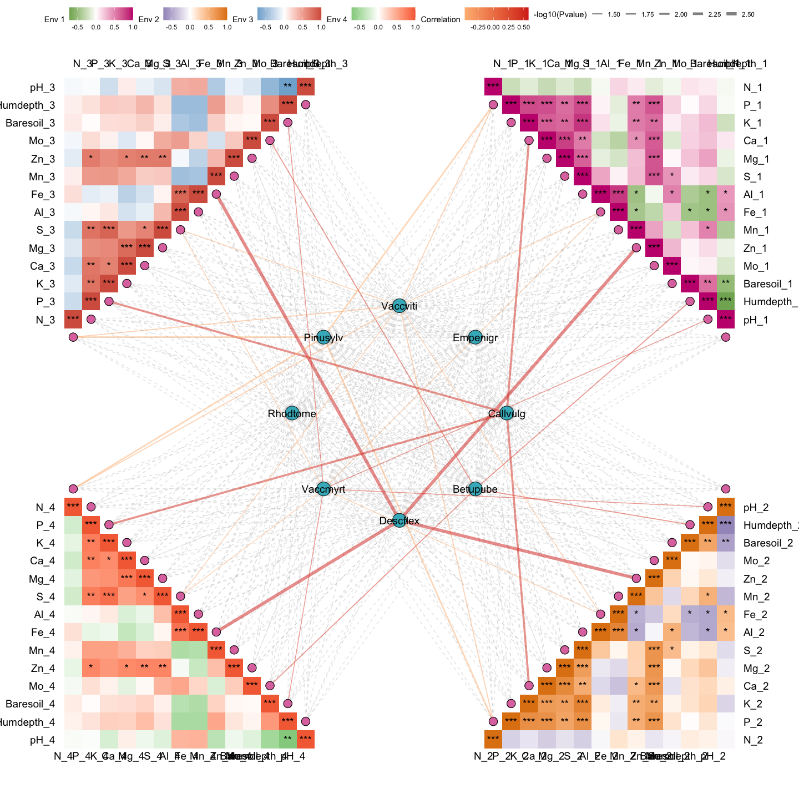
Example4: Mantel-test with environment
Leave lines with a significance level less than 0.05, and change the color of heatmap.
out2 <- gglink_heatmaps(
env = Envdf_4st, # environmental data frame
spec = Spedf, # species/community data frame
env_select = list(Env01 = 1:14, # env block Env01 = cols 1-14
Env03 = 29:40, # Env03 = cols 29-40
Env04 = 43:50), # Env04 = cols 43-50
spec_select = list(Spec01 = 1:8), # species block: Spec01 = cols 1-8
relation_method = "correlation", # association via correlation
spec_layout = "circle_outline", # circular outline layout for species heatmap
cor.method = "pearson", # Pearson correlation
cor.use = "pairwise", # pairwise-complete handling of missing values
drop_nonsig = TRUE, # keep only links with p < 0.05 (drop non-significant)
HeatmapColorBar = list(c("#2166ac", "#b2182b"), # custom low->high colour ramp per env block
c("#1b7837", "#762a83"),
c("#4393c3", "#d6604d")),
HeatmapPointFill = "#8c6bb1", # fill colour of heatmap anchor points
CorePointFill = "#225ea8", # fill colour of the central/core point
HeatmapLabelOrient = 45, # rotate heatmap labels by 45 degrees
r = 6, # radius of the circular layout
distance = 1, # spacing between heatmap blocks
orientation = c("top_right", "top_left", "bottom_left") # placement of each env block
)
#> The max module in network is 2 we use the 2 modules for next analysis
out2[[2]] # second plot in the returned list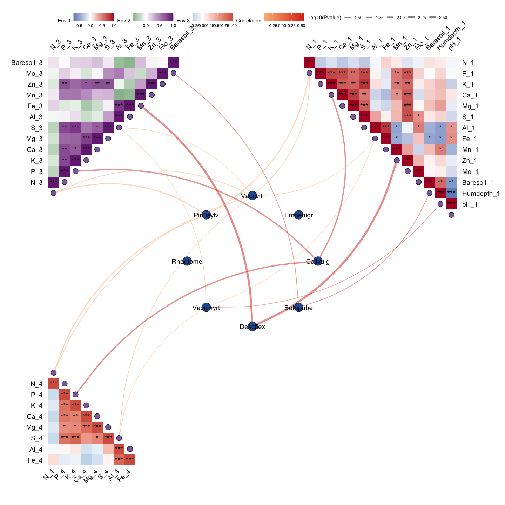
Example5: Network-environment
####----load Data----####
data("otu_rare_relative") # rarefied relative-abundance matrix (features x samples)
data("tax_tab") # node (taxonomy) annotation table
data("Envdf_4st_2") # environmental factor table for the network-env analysis
####----build graph object----####
graph_obj <- build_graph_from_mat(
mat = otu_rare_relative, # variables x samples abundance matrix
transfrom.method = "none", # pre-correlation transform; "none" = keep as-is
node_annotation = tax_tab, # taxonomy joined onto each node by name
p.threshold = 0.05, # adjusted p-value cutoff
r.threshold = 0.75, # |r| cutoff for keeping an edge
method = "WGCNA", # correlation backend: WGCNA::corAndPvalue
proc = "BH", # multiple-testing correction (Benjamini-Hochberg)
module.method = "Fast_greedy", # community detection algorithm
top_modules = 15, # keep top-15 modules; rest -> "Others"
seed = 1115 # fix RNG for reproducibility
)
graph_obj # resulting tbl_graph
#> # A tbl_graph: 1951 nodes and 8732 edges
#> #
#> # An undirected simple graph with 120 components
#> #
#> # Node Data: 1,951 × 14 (active)
#> name modularity modularity2 modularity3 Modularity Degree Strength Kingdom
#> <chr> <fct> <ord> <chr> <ord> <dbl> <dbl> <chr>
#> 1 ASV_916 1 1 1 1 57 49.7 Bacter…
#> 2 ASV_777 1 1 1 1 55 46.4 Bacter…
#> 3 ASV_23… 1 1 1 1 53 46.6 Bacter…
#> 4 ASV_606 1 1 1 1 51 42.7 Bacter…
#> 5 ASV_740 1 1 1 1 51 44.9 Bacter…
#> 6 ASV_15… 1 1 1 1 50 43.8 Bacter…
#> 7 ASV_568 1 1 1 1 49 43.6 Bacter…
#> 8 ASV_671 1 1 1 1 49 43.7 Bacter…
#> 9 ASV_664 1 1 1 1 49 42.9 Bacter…
#> 10 ASV_10… 1 1 1 1 49 43.6 Bacter…
#> # ℹ 1,941 more rows
#> # ℹ 6 more variables: Phylum <chr>, Class <chr>, Order <chr>, Family <chr>,
#> # Genus <chr>, Species <chr>
#> #
#> # Edge Data: 8,732 × 5
#> from to weight correlation corr_direction
#> <int> <int> <dbl> <dbl> <chr>
#> 1 1656 1703 0.793 0.793 Positive
#> 2 782 787 0.895 0.895 Positive
#> 3 395 787 0.864 0.864 Positive
#> # ℹ 8,729 more rows
p_sub <- ggNetView(
graph_obj = graph_obj, # tbl_graph object
layout = "gephi", # node-positioning algorithm
center = T, # pull nodes toward each module centre
layout_module = "adjacent", # place neighbouring modules close together
group_by = "Modularity", # group nodes by module
node_fill = "Modularity" # map point fill to module
)
p_sub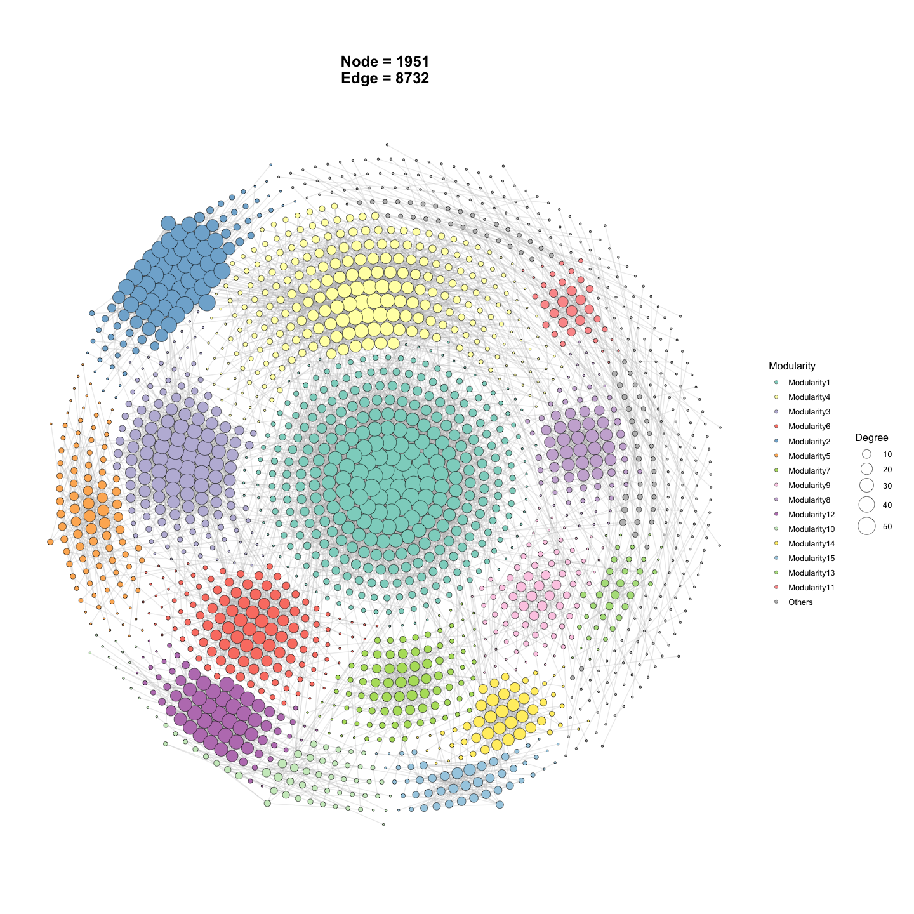
p_sub2 <- ggNetView(
graph_obj = graph_obj, # tbl_graph object
layout = "gephi", # node-positioning algorithm
center = F, # do NOT pull nodes toward each module centre (compare with p_sub)
layout_module = "adjacent", # place neighbouring modules close together
group_by = "Modularity", # group nodes by module
node_fill = "Modularity" # map point fill to module
)
p_sub2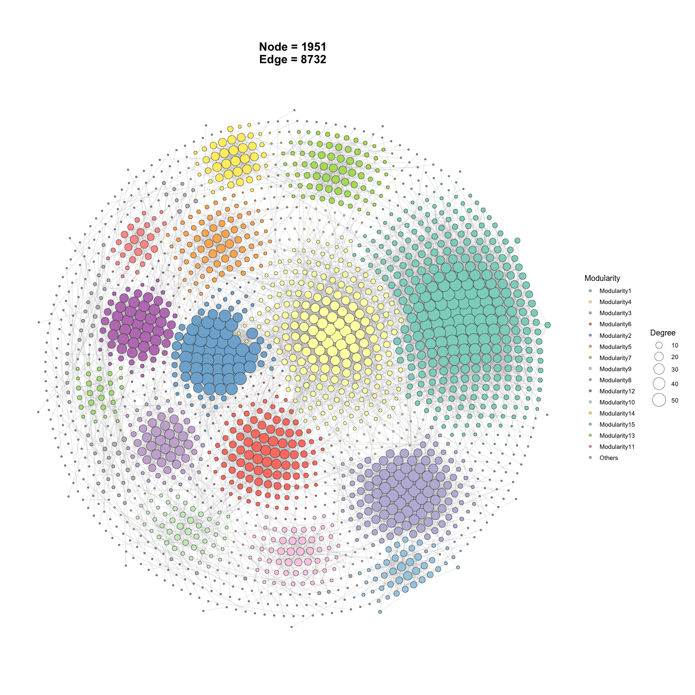
####----Network Environment PC1----####
res <- ggnetview_modularity_heatmaps(
graph_obj, # network tbl_graph object
Envdf_4st_2, # environmental factor table
otu_rare_relative, # abundance matrix (used to derive per-module index)
env_select = list(Env01 = 1:14, # env block Env01 = cols 1-14
Env02 = 15:28, # Env02 = cols 15-28
Env03 = 29:42, # Env03 = cols 29-42
Env04 = 43:56), # Env04 = cols 43-56
drop_nonsig = T, # keep only significant module-env links
r = 35, # radius of the circular heatmap layout
distance = 5, # spacing between heatmap blocks
HeatmapLabelOrient = 45, # rotate heatmap labels by 45 degrees
shrink = 0.65, # shrink the network layout inward
module_index = "eigengene", # 或 "abundance" # per-module summary: eigengene (PC1)
relation_method = "correlation", # 或 "mantel", # module-env association method
HeatmapColorBar = list( # custom low->high colour ramp per env block
c("#2166ac", "#b2182b"),
c("#1b7837", "#762a83"),
c("#4393c3", "#d6604d"),
c("#92c5de", "#f4a582")
),
layout = "gephi", # node-positioning algorithm
layout_module = "adjacent", # place neighbouring modules close together
node_jitter = T, # jitter node positions to reduce overlap
module_outline = T, # draw an outer hull/line around each module
HeatmapScale = 1.5, # scale factor for heatmap point/tile size
network_outline = T, # draw an outer boundary around node groups
module_label = F, # do not show node labels
# module_label_size = 5
)
res[[1]]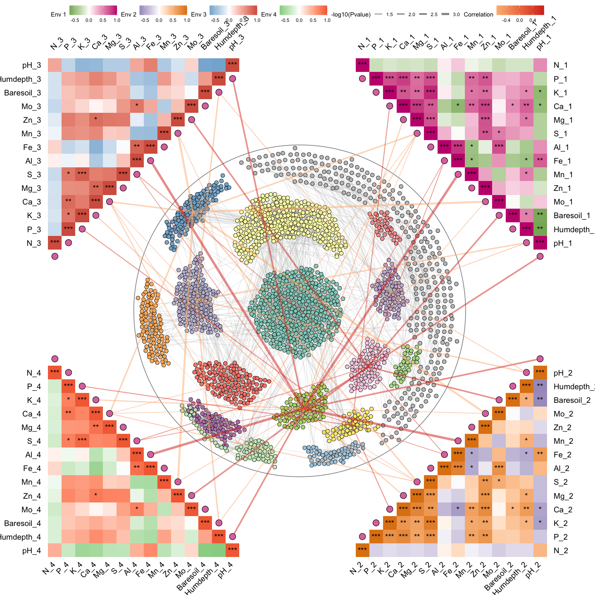
####----Network Environment abudance----####
res2 <- ggnetview_modularity_heatmaps(
graph_obj, # network tbl_graph object
Envdf_4st_2, # environmental factor table
otu_rare_relative, # abundance matrix (used to derive per-module index)
env_select = list(Env01 = 1:14, # env block Env01 = cols 1-14
Env02 = 15:28, # Env02 = cols 15-28
Env03 = 29:42, # Env03 = cols 29-42
Env04 = 43:56), # Env04 = cols 43-56
drop_nonsig = T, # keep only significant module-env links
r = 35, # radius of the circular heatmap layout
distance = 5, # spacing between heatmap blocks
HeatmapLabelOrient = 45, # rotate heatmap labels by 45 degrees
shrink = 0.65, # shrink the network layout inward
module_index = "abundance", # 或 "abundance" # per-module summary: aggregated abundance
relation_method = "mantel", # 或 "mantel", # module-env association via Mantel test
HeatmapColorBar = list( # custom low->high colour ramp per env block
c("#2166ac", "#b2182b"),
c("#1b7837", "#762a83"),
c("#4393c3", "#d6604d"),
c("#92c5de", "#f4a582")
),
layout = "gephi", # node-positioning algorithm
layout_module = "adjacent", # place neighbouring modules close together
node_jitter = T, # jitter node positions to reduce overlap
module_outline = T, # draw an outer hull/line around each module
HeatmapScale = 1.5, # scale factor for heatmap point/tile size
network_outline = T, # draw an outer boundary around node groups
module_label = F, # do not show node labels
# module_label_size = 5
)
#> Using `mantel_kind = "block_vs_col"`. Note: prior versions ran the equivalent of `"col_vs_col"` when `relation_method = "mantel"`. The new default is the ecologically standard `"block_vs_col"` (community matrix vs each env column). Pass `mantel_kind = "col_vs_col"` to reproduce old results.
res2[[1]]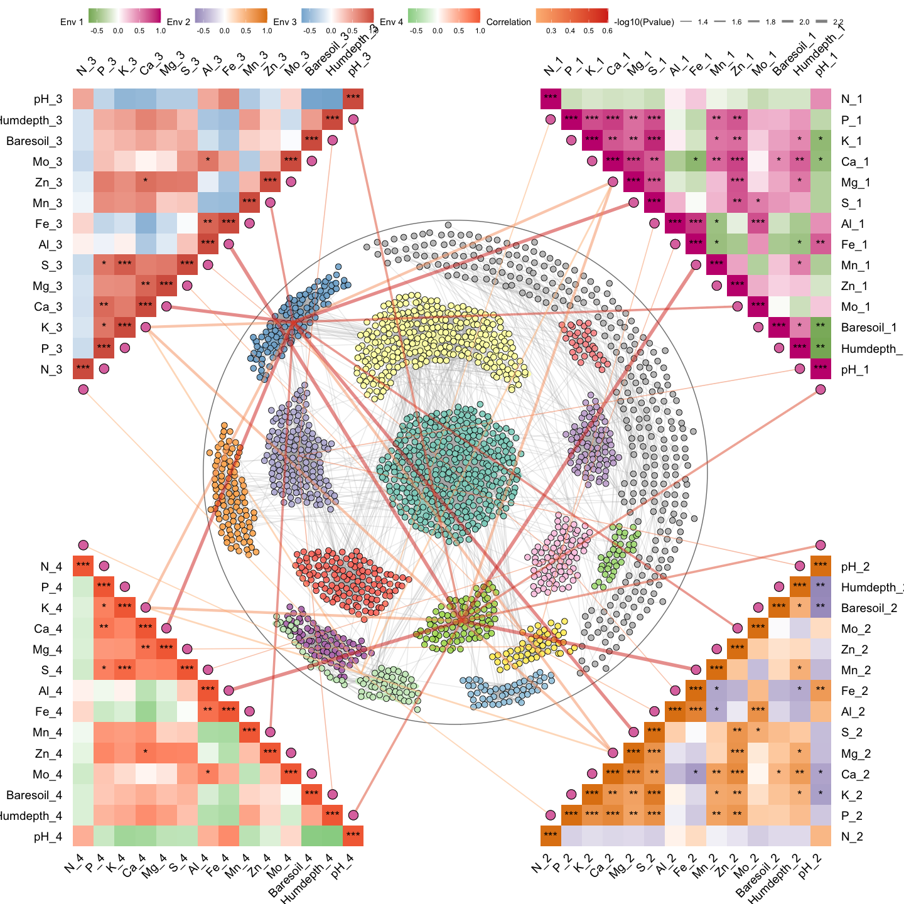
res2[[2]]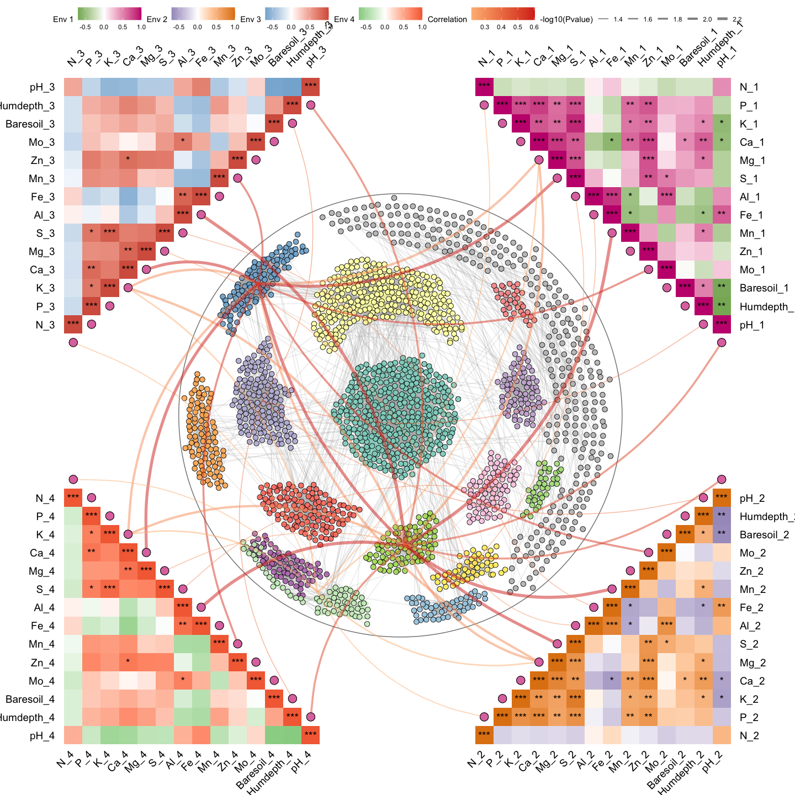
Example6: Network-compare
# ---- Multi-network "linked" view (no per-group scale normalisation) ----
# `ggNetView_multi_link()` builds ONE network per group (defined by `group_info`),
# lays each one out independently, and places all sub-networks on a circular
# anchor frame so that cross-group edges/relationships can be visually compared.
out1 <- ggNetView_multi_link(
mat = otu_rare_relative, # variables x samples abundance matrix
group_info = otu_sample, # sample metadata; defines how samples are split into groups
transfrom.method = "none", # pre-correlation transform on `mat`; "none" = keep as-is
r.threshold = 0.7, # |r| cutoff for keeping an edge
p.threshold = 0.05, # adjusted p-value cutoff
method = "WGCNA", # correlation backend: WGCNA::corAndPvalue
cor.method = "pearson", # Pearson correlation
proc = "BH", # multiple-testing correction (Benjamini-Hochberg)
module.method = "Fast_greedy", # community detection per sub-network
layout_module = "adjacent", # neighbouring modules placed close together
center = T, # pull a node toward the centre of each sub-layout
top_modules = 15, # keep top-15 modules per sub-network; rest -> "Others"
layout = "gephi", # global node-positioning algorithm per sub-network
shrink = 0.5, # shrink each sub-network inward (smaller = more compact)
scale = F, # do NOT normalise each group to a common scale -> sub-networks keep their native size differences
node_jitter = T, # jitter node positions slightly to reduce overlap
node_jitter_sd = 0.3, # SD of the jitter (bigger -> more spread)
anchor_dist = 30, # distance between groups on the outer anchor circle
seed = 1115, # fix RNG for reproducibility
orientation = "up", # frame orientation; one of "up"/"down"/"left"/"right"
angle = 0 # additional rotation angle (degrees)
)
#> Scale for size is already present.
#> Adding another scale for size, which will replace the existing scale.
#> Scale for size is already present.
#> Adding another scale for size, which will replace the existing scale.
p1 <- out1[["p"]] # the assembled ggplot object
p1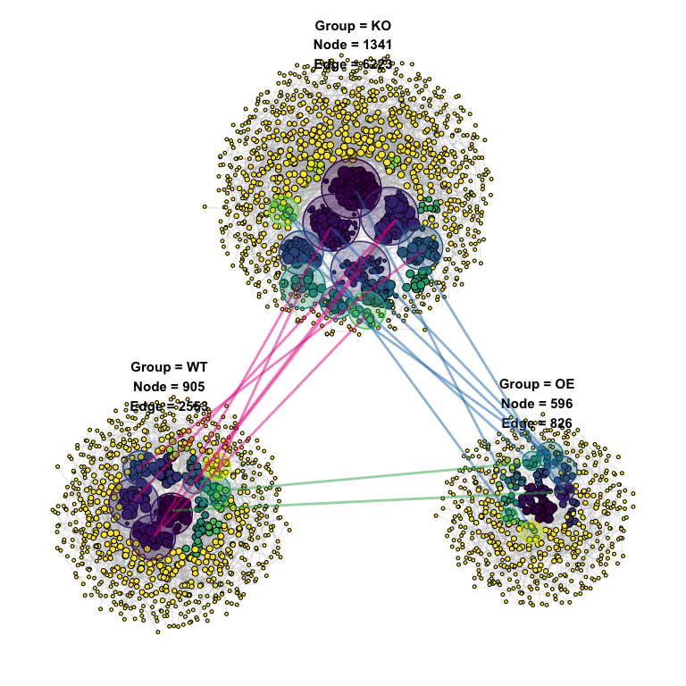
out1$info # auxiliary table: per-group node/edge counts, module info, etc.
#> # A tibble: 18 × 11
#> modA modB overlap sizeA sizeB overlap_coef pvalue FDR Group GroupA
#> <chr> <chr> <int> <int> <int> <dbl> <dbl> <dbl> <chr> <chr>
#> 1 1 3 2 15 7 0.286 0.0307 1 KO_to_OE KO
#> 2 49 6 1 4 3 0.333 0.0333 1 KO_to_OE KO
#> 3 2 8 2 20 3 0.667 0.00867 0.984 KO_to_OE KO
#> 4 7 8 1 4 3 0.333 0.0333 1 KO_to_OE KO
#> 5 11 9 2 13 5 0.4 0.0115 0.984 KO_to_OE KO
#> 6 49 11 1 4 4 0.25 0.0443 1 KO_to_OE KO
#> 7 5 15 2 29 3 0.667 0.0182 1 KO_to_OE KO
#> 8 Others Others 179 219 276 0.817 0.00896 0.984 KO_to_OE KO
#> 9 1 55 4 28 27 0.148 0.0452 1 KO_to_WT KO
#> 10 2 2 4 30 22 0.182 0.0286 1 KO_to_WT KO
#> 11 97 2 2 8 22 0.25 0.0387 1 KO_to_WT KO
#> 12 1 1 5 28 24 0.208 0.00568 0.647 KO_to_WT KO
#> 13 4 4 2 18 11 0.182 0.0488 1 KO_to_WT KO
#> 14 3 6 2 18 8 0.25 0.0264 1 KO_to_WT KO
#> 15 8 16 2 11 7 0.286 0.00759 0.647 KO_to_WT KO
#> 16 Others Others 231 309 378 0.748 0.00660 0.647 KO_to_WT KO
#> 17 3 55 2 6 12 0.333 0.0233 1 OE_to_WT OE
#> 18 9 9 1 3 2 0.5 0.0215 1 OE_to_WT OE
#> # ℹ 1 more variable: GroupB <chr>
####----Plot2----####
# ---- Same setup but with `scale = TRUE` -> each group normalised to a common size ----
# Useful when groups have very different network sizes and you want them
# visually comparable side-by-side. With `scale = TRUE` the native size
# differences are removed, so jitter_sd is also reduced (0.01) accordingly.
out2 <- ggNetView_multi_link(
mat = otu_rare_relative,
group_info = otu_sample,
transfrom.method = "none",
r.threshold = 0.7,
p.threshold = 0.05,
method = "WGCNA",
cor.method = "pearson",
proc = "BH",
module.method = "Fast_greedy",
layout_module = "adjacent",
center = T,
top_modules = 15,
layout = "gephi",
shrink = 0.5,
scale = T, # normalise each group to a comparable coordinate scale
node_jitter = T,
node_jitter_sd = 0.01, # smaller jitter — sub-networks are already on a unified scale
anchor_dist = 1,
seed = 1115,
orientation = "up",
angle = 0
)
#> Scale for size is already present.
#> Adding another scale for size, which will replace the existing scale.
#> Scale for size is already present.
#> Adding another scale for size, which will replace the existing scale.
p2 <- out2[["p"]]
p2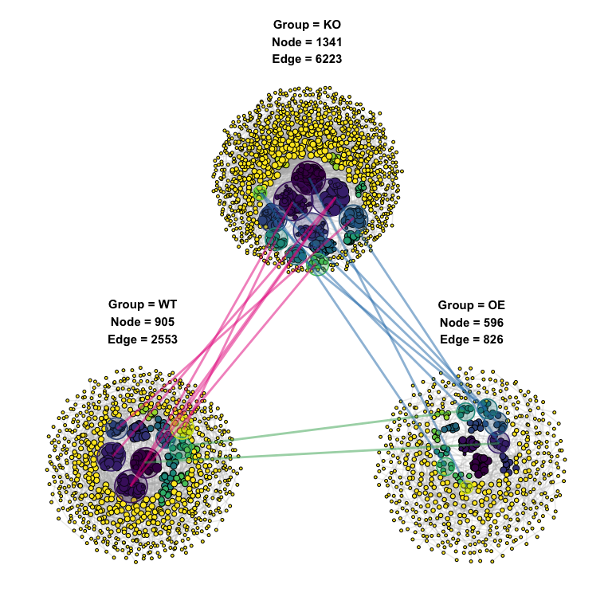
Example7: Network-topology
# ---- Build a co-occurrence network from an abundance matrix ----
# Internal pipeline: transform -> correlation -> p-value adjustment ->
# edge filtering -> community detection -> attach taxonomy.
graph_obj <- build_graph_from_mat(
mat = otu_rare_relative, # variables x samples numeric matrix
transfrom.method = "none", # input already relative abundance, no extra transform
method = "WGCNA", # correlation backend: WGCNA::corAndPvalue
proc = "bonferroni", # multiple-testing correction
r.threshold = 0.7, # |r| cutoff for keeping an edge
p.threshold = 0.05, # adjusted p-value cutoff
node_annotation = tax_tab, # taxonomy joined onto each node by name
top_modules = 15, # keep top-15 modules; rest -> "Others"
seed = 1115 # fix RNG for reproducibility
)
graph_obj # tbl_graph with Modularity / Degree / Strength + taxonomy columns
#> # A tbl_graph: 236 nodes and 924 edges
#> #
#> # An undirected simple graph with 33 components
#> #
#> # Node Data: 236 × 14 (active)
#> name modularity modularity2 modularity3 Modularity Degree Strength Kingdom
#> <chr> <fct> <ord> <chr> <ord> <dbl> <dbl> <chr>
#> 1 ASV_12… 6 6 6 6 29 28.3 Bacter…
#> 2 ASV_14… 6 6 6 6 28 27.4 Bacter…
#> 3 ASV_649 6 6 6 6 27 26.5 Bacter…
#> 4 ASV_705 6 6 6 6 27 26.5 Bacter…
#> 5 ASV_913 6 6 6 6 27 26.2 Bacter…
#> 6 ASV_13… 6 6 6 6 27 26.5 Bacter…
#> 7 ASV_14… 6 6 6 6 27 26.5 Bacter…
#> 8 ASV_17… 6 6 6 6 27 26.3 Bacter…
#> 9 ASV_24… 6 6 6 6 27 26.5 Bacter…
#> 10 ASV_25… 6 6 6 6 27 26.4 Bacter…
#> # ℹ 226 more rows
#> # ℹ 6 more variables: Phylum <chr>, Class <chr>, Order <chr>, Family <chr>,
#> # Genus <chr>, Species <chr>
#> #
#> # Edge Data: 924 × 5
#> from to weight correlation corr_direction
#> <int> <int> <dbl> <dbl> <chr>
#> 1 182 183 0.959 0.959 Positive
#> 2 182 184 0.941 0.941 Positive
#> 3 182 185 0.940 0.940 Positive
#> # ℹ 921 more rows
# ---- Compute the FULL set of network topology + robustness metrics ----
# When `mat` is provided, the function recomputes the thresholded correlation
# matrix from `mat` (used as `network.raw`) and ALL topology fields are
# returned with real values - including the ones that are NA when mat = NULL:
# Cohension_Positive / Cohension_Negative
# Robustness_weight / Robustness_unweight
# Stability
# out$Robustness (the 5%-100% node-removal curve)
topology_with_mat <- get_network_topology(
graph_obj = graph_obj, # input tbl_graph (required)
mat = otu_rare_relative, # raw abundance matrix used to derive sp.ra and rebuild network.raw
transfrom.method = "none", # pre-correlation transform on `mat`; "none" = keep as-is
method = "WGCNA", # correlation backend: WGCNA::corAndPvalue
proc = "bonferroni", # multiple-testing correction
r.threshold = 0.7, # |r| cutoff for keeping an edge in network.raw
p.threshold = 0.05, # adjusted p-value cutoff for keeping an edge
bootstrap = 100 # # of bootstrap iterations for robustness AND # of random ER networks for the Random_nerwork column
)
topology_with_mat
#> $topology
#> # A tibble: 24 × 3
#> Topology Target_network Random_nerwork
#> <chr> <dbl> <dbl>
#> 1 Node 236 236
#> 2 Edge 924 924
#> 3 Degree 7.83 7.83
#> 4 Distance 1.46 2.87
#> 5 Diameter 4.75 5.11
#> 6 Density 0.0333 0.0333
#> 7 Transitivity_global 0.849 0.0330
#> 8 Transitivity_local 0.809 0.0336
#> 9 Betweenness 3.56 220.
#> 10 Betweenness_edge 2.63 86.1
#> # ℹ 14 more rows
#>
#> $Robustness
#> Proportion.removed remain.mean remain.sd remain.se weighted
#> 1 0.05 0.93894068 0.006736051 0.0006736051 weighted
#> 2 0.10 0.87703390 0.008235367 0.0008235367 weighted
#> 3 0.15 0.82266949 0.010712392 0.0010712392 weighted
#> 4 0.20 0.76203390 0.013052837 0.0013052837 weighted
#> 5 0.25 0.70402542 0.013048043 0.0013048043 weighted
#> 6 0.30 0.64381356 0.013068112 0.0013068112 weighted
#> 7 0.35 0.58542373 0.015351419 0.0015351419 weighted
#> 8 0.40 0.53025424 0.014862819 0.0014862819 weighted
#> 9 0.45 0.47394068 0.017006569 0.0017006569 weighted
#> 10 0.50 0.42279661 0.017083231 0.0017083231 weighted
#> 11 0.55 0.36605932 0.019139188 0.0019139188 weighted
#> 12 0.60 0.31377119 0.018934170 0.0018934170 weighted
#> 13 0.65 0.26504237 0.016164591 0.0016164591 weighted
#> 14 0.70 0.21809322 0.016388331 0.0016388331 weighted
#> 15 0.75 0.16758475 0.015323690 0.0015323690 weighted
#> 16 0.80 0.12334746 0.014364862 0.0014364862 weighted
#> 17 0.85 0.07881356 0.015843037 0.0015843037 weighted
#> 18 0.90 0.04635593 0.011675496 0.0011675496 weighted
#> 19 0.95 0.01347458 0.008588939 0.0008588939 weighted
#> 20 1.00 0.00000000 0.000000000 0.0000000000 weighted
#> 21 0.05 0.93877119 0.007084582 0.0007084582 unweighted
#> 22 0.10 0.87728814 0.009894707 0.0009894707 unweighted
#> 23 0.15 0.82177966 0.009911189 0.0009911189 unweighted
#> 24 0.20 0.76169492 0.013495506 0.0013495506 unweighted
#> 25 0.25 0.70389831 0.013212479 0.0013212479 unweighted
#> 26 0.30 0.64474576 0.014223075 0.0014223075 unweighted
#> 27 0.35 0.58618644 0.014962542 0.0014962542 unweighted
#> 28 0.40 0.53211864 0.015718690 0.0015718690 unweighted
#> 29 0.45 0.47762712 0.018078695 0.0018078695 unweighted
#> 30 0.50 0.42050847 0.015057993 0.0015057993 unweighted
#> 31 0.55 0.36686441 0.018069664 0.0018069664 unweighted
#> 32 0.60 0.31233051 0.017058956 0.0017058956 unweighted
#> 33 0.65 0.26661017 0.019761901 0.0019761901 unweighted
#> 34 0.70 0.21406780 0.018331729 0.0018331729 unweighted
#> 35 0.75 0.17063559 0.018374961 0.0018374961 unweighted
#> 36 0.80 0.12317797 0.017838089 0.0017838089 unweighted
#> 37 0.85 0.08114407 0.015429840 0.0015429840 unweighted
#> 38 0.90 0.04597458 0.010593220 0.0010593220 unweighted
#> 39 0.95 0.01440678 0.008602021 0.0008602021 unweighted
#> 40 1.00 0.00000000 0.000000000 0.0000000000 unweightedExample8: Zi-Pi
# Extract the two inputs Zi-Pi needs from graph object
nodes_bulk <- get_graph_nodes(obj) # node table (module + degree cols)
adj_mat <- get_graph_adjacency(obj) # adjacency / correlation matrix
role_palette <- c(
"Peripherals" = "#377eb8",
"Connectors" = "#4daf4a",
"Module hubs" = "#e41a1c",
"Network hubs" = "#ff7f00"
)
# Compute Zi-Pi and classify
zp <- ggnetview_zipi(
nodes_bulk = nodes_bulk, # node table: IDs in rownames or a `name` col
z_bulk_mat = adj_mat, # adjacency matrix; non-zero entries = edges
modularity_col = "Modularity", # column holding module labels (no NAs)
degree_col = "Degree", # column holding node degree (no NAs)
zi_threshold = 2.5, # Zi cutoff for role classification
pi_threshold = 0.62, # Pi cutoff for role classification
na.rm = FALSE, # FALSE = keep unclassifiable nodes (type = NA)
point_colors = role_palette, # point + legend colours, keyed by role
bg_colors = c( # quadrant background fills, keyed by role
"Peripherals" = "#f0f0f0",
"Connectors" = "#d9f0d3",
"Module hubs" = "#fde0dd",
"Network hubs" = "#fee8c8"
),
label_colors = role_palette, # quadrant text-label colours (default: black)
label_size = 5, # quadrant text-label size (default 5.5)
bg_alpha = 0.35 # background opacity 0..1 (default 0.25)
)
class(zp)
#> [1] "list"
names(zp)
#> [1] "data" "plot"
zp$plot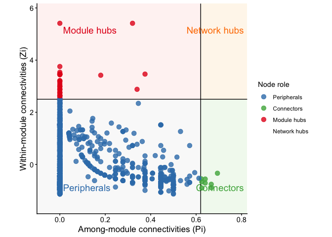
Example9: RMT threshold
# ---- RMT threshold scan #1: WGCNA correlation backend ----
# `ggNetView_RMT()` scans a series of candidate |r| thresholds, builds the
# thresholded correlation matrix at each, computes its eigenvalue spacing
# distribution (NNSD), and picks the threshold at which the NNSD transitions
# from Gaussian Orthogonal Ensemble (signal + noise) to Poisson (noise-free,
# modular network) — this is the RMT-recommended cutoff.
out <- ggNetView_RMT(
mat = otu_rare_relative, # input matrix (variables x samples)
transfrom.method = "none", # already relative-abundance, no extra transform
method = "WGCNA", # use WGCNA::corAndPvalue for correlation
cor.method = "pearson", # Pearson correlation
unfold.method = "gaussian", # Gaussian KDE unfolding of eigenvalues
bandwidth = "nrd0", # KDE bandwidth rule (stats::density default)
nr.fit.points = 20, # support points (only used if unfold.method = "spline")
discard.outliers = TRUE, # IQR-trim extreme eigenvalues before unfolding
discard.zeros = TRUE, # drop all-zero rows/cols after thresholding
min.mat.dim = 40, # early-stop if effective dim drops below 40
max.ev.spacing = 3, # truncate NNSD tail at spacing = 3
save_plots = FALSE, # don't write diagnostic PNGs to disk
out_dir = "RMT_plots", # (only used when save_plots = TRUE)
verbose = TRUE, # print scan progress to console
seed = 1115 # fix RNG for reproducibility
)
# The chosen threshold to feed downstream into build_graph_from_mat(r.threshold = ...)
out$chosen_thresholdsessionInfo
sessionInfo()
#> R version 4.6.1 (2026-06-24)
#> Platform: aarch64-apple-darwin23
#> Running under: macOS Tahoe 26.3.1
#>
#> Matrix products: default
#> BLAS: /Library/Frameworks/R.framework/Versions/4.6/Resources/lib/libRblas.0.dylib
#> LAPACK: /Library/Frameworks/R.framework/Versions/4.6/Resources/lib/libRlapack.dylib; LAPACK version 3.12.1
#>
#> locale:
#> [1] zh_CN.UTF-8/zh_CN.UTF-8/zh_CN.UTF-8/C/zh_CN.UTF-8/zh_CN.UTF-8
#>
#> time zone: Asia/Shanghai
#> tzcode source: internal
#>
#> attached base packages:
#> [1] stats graphics grDevices utils datasets methods base
#>
#> other attached packages:
#> [1] future_1.70.0 ggNetView_0.2.1 ggnewscale_0.5.2 ggplot2_4.0.3
#>
#> loaded via a namespace (and not attached):
#> [1] tidyselect_1.2.1 psych_2.6.5 WGCNA_1.74
#> [4] viridisLite_0.4.3 dplyr_1.2.1 farver_2.1.2
#> [7] viridis_0.6.5 S7_0.2.2 ggraph_2.2.2
#> [10] fastmap_1.2.0 tweenr_2.0.3 digest_0.6.39
#> [13] rpart_4.1.27 lifecycle_1.0.5 cluster_2.1.8.2
#> [16] survival_3.8-6 magrittr_2.0.5 compiler_4.6.1
#> [19] rlang_1.3.0 Hmisc_5.2-6 tools_4.6.1
#> [22] igraph_2.3.3 utf8_1.2.6 yaml_2.3.12
#> [25] data.table_1.18.4 knitr_1.51 FNN_1.1.4.1
#> [28] labeling_0.4.3 graphlayouts_1.2.4 htmlwidgets_1.6.4
#> [31] mnormt_2.1.2 RColorBrewer_1.1-3 withr_3.0.3
#> [34] foreign_0.8-91 purrr_1.2.2 nnet_7.3-20
#> [37] dynamicTreeCut_1.63-1 grid_4.6.1 polyclip_1.10-7
#> [40] preprocessCore_1.74.0 colorspace_2.1-3 fastcluster_1.3.0
#> [43] globals_0.19.1 scales_1.4.0 iterators_1.0.14
#> [46] MASS_7.3-65 dichromat_2.0-0.1 cli_3.6.6
#> [49] rmarkdown_2.31 vegan_2.7-5 generics_0.1.4
#> [52] otel_0.2.0 future.apply_1.20.2 rstudioapi_0.19.0
#> [55] cachem_1.1.0 ggforce_0.5.0 stringr_1.6.0
#> [58] splines_4.6.1 parallel_4.6.1 impute_1.86.0
#> [61] matrixStats_1.5.0 base64enc_0.1-6 vctrs_0.7.3
#> [64] Matrix_1.7-5 ggrepel_0.9.8 Formula_1.2-5
#> [67] htmlTable_2.5.0 listenv_1.0.0 foreach_1.5.2
#> [70] tidyr_1.3.2 parallelly_1.48.0 glue_1.8.1
#> [73] codetools_0.2-20 stringi_1.8.7 gtable_0.3.6
#> [76] tibble_3.3.1 pillar_1.11.1 htmltools_0.5.9
#> [79] R6_2.6.1 doParallel_1.0.17 tidygraph_1.3.1
#> [82] evaluate_1.0.5 lattice_0.22-9 backports_1.5.1
#> [85] memoise_2.0.1 Rcpp_1.1.2 permute_0.9-10
#> [88] gridExtra_2.3.1 nlme_3.1-169 checkmate_2.3.4
#> [91] mgcv_1.9-4 xfun_0.60 pkgconfig_2.0.3